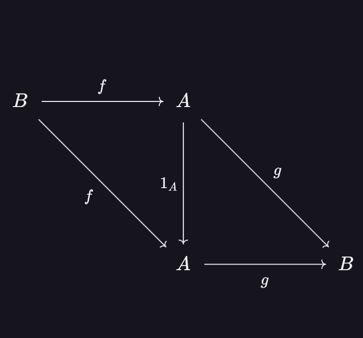
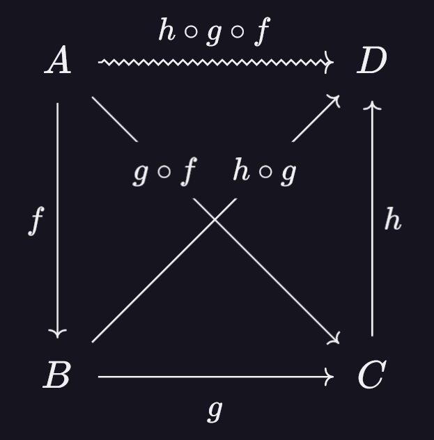

Une catégorie est la donnée :


Vous connaissez probablement plusieurs catégories. Voici un tableau qui regroupent les plus communes.
| Nom | Objets | Flèches |
|---|---|---|
| \(\mathbf{Set}\) ou \(\mathbf{Ens}\) | Ensembles | Applications |
| \(\mathbf{Mon}\) | Monoïdes | Morphismes de monoïdes |
| \(\mathbf{Grp}\) | Groupes | Morphismes de groupes |
| \(\mathbf{Ab}\) | Groupes abéliens | Morphismes de groupes |
| \(\mathbf{Ring}\) | Anneaux | Morphismes d'anneaux |
| \(\mathbf{Top}\) | Espaces topologiques | Applications continues |
| \(\mathbf{Ord}\) | Ensembles ordonnés | Applications croissantes |
| \(\mathbf{Vect}_\mathbb{K}\) | \(\mathbb{K}\)-espaces vectoriels | Applications linéaires |
| \(\mathbf{Mes}\) | Espaces mesurables | Applications mesurables |
| \(\mathbf{Grph}\) | Graphes | Morphismes de graphes |
On se place dans une catégorie \(\mathscr{C}\). Une flèche entre deux objets de \(\mathscr{C}\) peut avoir plusieurs propriétés.
Soit \(f\colon A\to B\) une flèche de \(\mathscr{C}\). On dit que \(f\) est un monomorphisme si pour toutes flèches \(g,h\colon C\to A\) de \(\mathscr{C}\) : \[f\circ g=f\circ h\implies g=h.\]
Soit \(f\colon A\to B\) une flèche de \(\mathscr{C}\). On dit que \(f\) est un épimorphisme si pour toutes flèches \(g,h\colon B\to C\) de \(\mathscr{C}\) : \[g\circ f=h\circ f\implies g=h.\]
Soit \(f\colon A\to B\) une flèche de \(\mathscr{C}\). On dit que \(f\) est un isomorphisme s'il existe \(g\colon B\to A\) telle que : \[g\circ f=1_A\quad\text{et}\quad f\circ g=1_B.\] On peut aisément démontrer que cette flèche \(g\colon B\to A\) est unique. On la note alors \(f^{-1}\). Il s'agit d'un isomorphisme de \(B\) dans \(A\).
Un isomorphisme est toujours à la fois un monomorphisme et un épimorphisme. En effet, soit \(f\colon A\to B\) une flèche dans une catégorie \(\mathscr{C}\). Soient \(g,h\colon C\to A\) flèches de la même catégorie. Supposons que \(f\circ g=f\circ h\). Alors : \(f^{-1}\circ f\circ g=f^{-1}\circ f\circ h\implies g=h\). Cela montre que \(f\) est un monomorphisme. On raisonne de la même façon pour montrer qu'il s'agit d'un épimorphisme.
Attention, la réciproque est fausse ! Si \(f\) est un monomorphisme-épimorphisme, il se peut que \(f\) ne soit pas un isomorphisme. En effet, plaçons-nous dans la catégorie \(\mathbf{Ring}\). Alors il existe une unique flèche (i.e. morphisme d'anneaux) \(\iota\colon\mathbb{Z}\to\mathbb{Q}\). \(\iota\) est un monomorphisme-épimorphisme mais n'est pas un isomorphisme.
Si \(A\) et \(B\) sont deux objets de \(\mathscr{C}\), on dit que \(A\) et \(B\) sont isomorphes s'il existe un isomorphisme \(f\colon A \to B\). Il s'agit d'une relation d'équivalence sur la classe des groupes. On note alors : \[A\cong B.\]